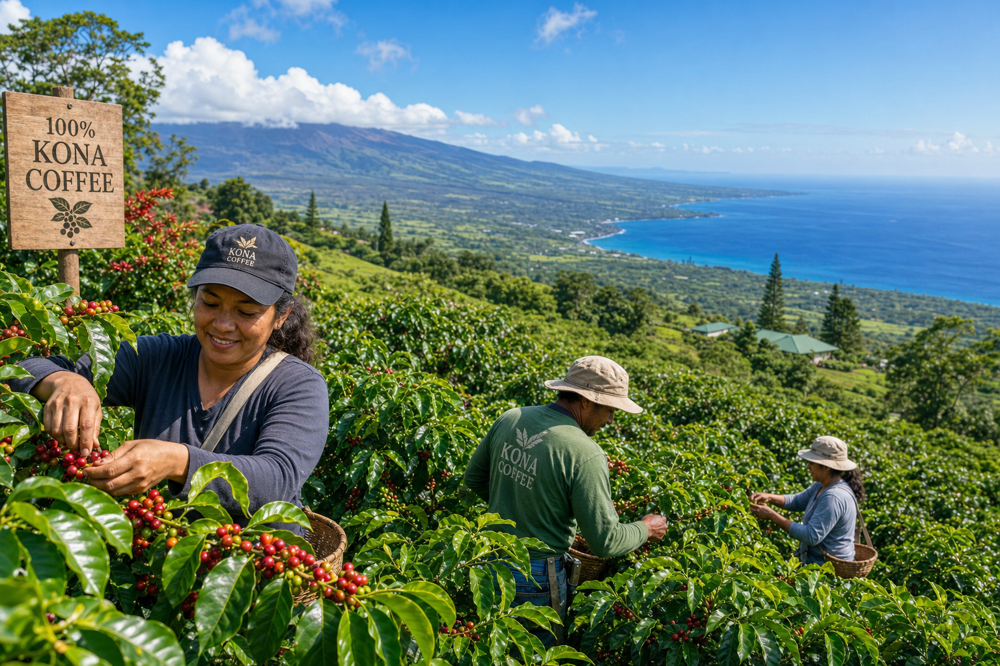
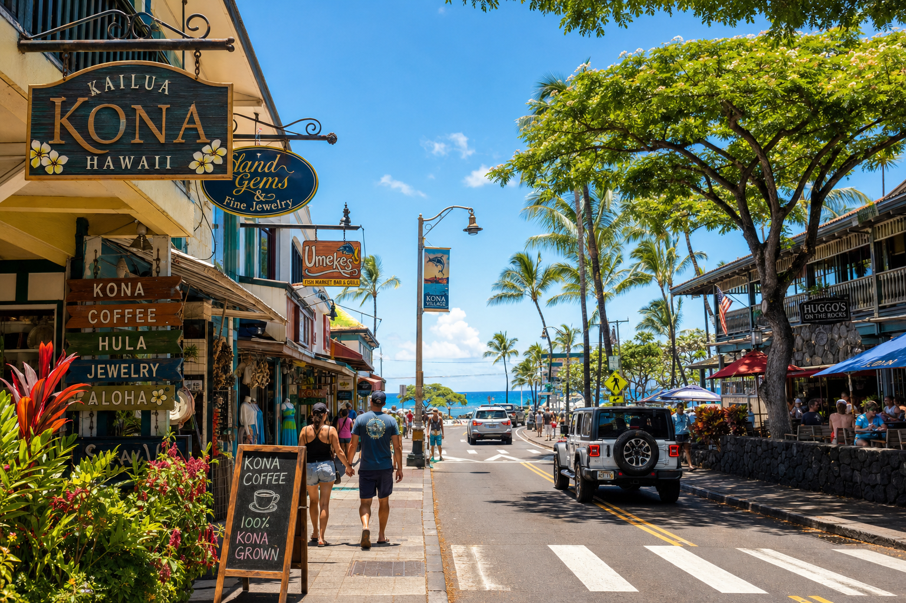
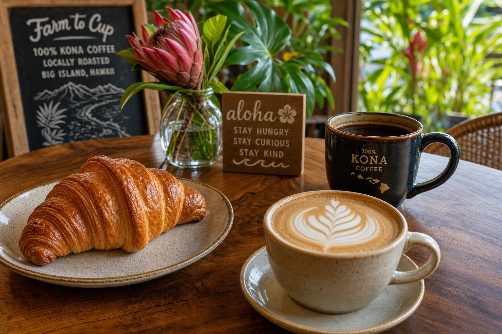

Coffee
The Fascinating History of Kona Coffee
How a missionary brought coffee seeds to the Big Island in 1828 and created one of the world's most sought-after specialty coffees.
Kona coffee stories, baking guides, and Big Island food culture.

How a missionary brought coffee seeds to the Big Island in 1828 and created one of the world's most sought-after specialty coffees.

A honest guide to the best baked goods on the Kona Coast. From traditional Hawaiian sweet bread to French pastry — Kona's baking scene is underrated.

Our head baker shares the secrets to pillowy, golden Hawaiian sweet bread — the same recipe that inspired our Lehua loaf.

The right pastry with the right coffee is transformative. We guide you through our favorite pairings from our own menu.

They look similar, but there are real differences between Hawaiian malasadas and the Portuguese bolas de berlim that inspired them. A deep dive into dough.

The Kona coffee belt stretches 30 miles along the western slope of Hualalai and Mauna Loa. Here's how to visit the farms, what to taste, and what to bring home.